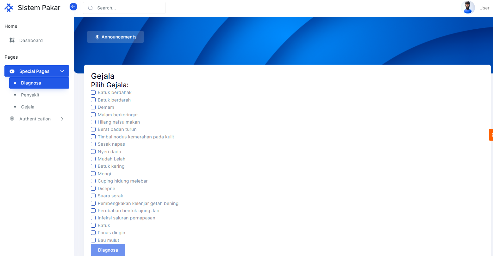
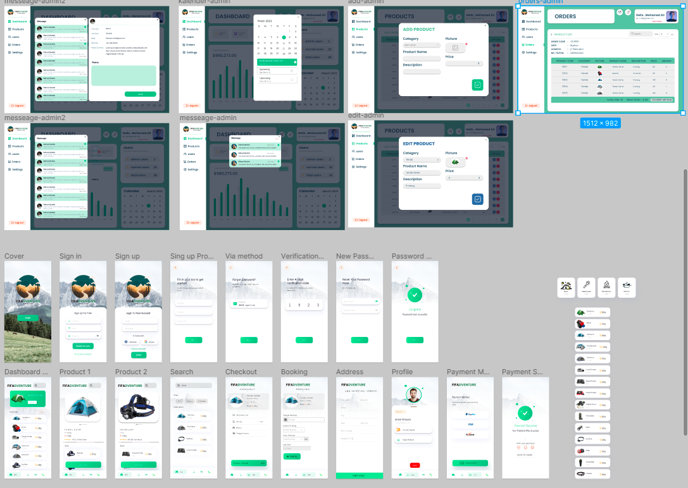
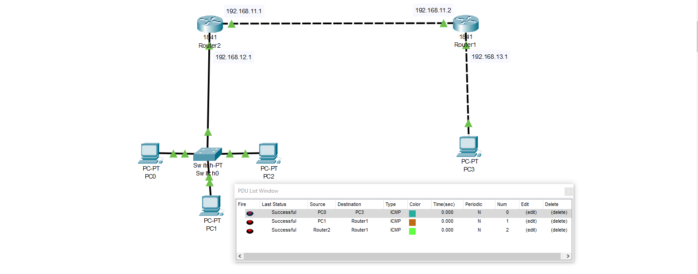

I'm Muhammad Ariq Hawari Adiputra
and I'm a
About me

Saya merupakan seorang mahasiswa semester 5 Informatika di Universitas Pembangunan Veteran Jawa Timur. Ketertarikan saya dalam dunia pemrograman telah mengantarkan saya pada perjalanan belajar yang menarik. Saya memulai dengan mempelajari bahasa C/C++, dan kemudian melanjutkan ke pemrograman web menggunakan PHP dan JavaScript. Saat ini, saya sedang fokus untuk memahami Topologi Jaringan yang lebih mendalam. Rasa ingin tahu yang saya miliki mendorong saya untuk menjelajahi dan mempelajari pemrograman aplikasi menggunakan bahasa Kotlin dan Swift.
Download My CVMy services
Full Stack Dev
Topologi Jaringan
UI/UX Desaigner
My skills
My Skill.
Saya sangat tertarik untuk mempelajari bahasa pemrograman. Programming adalah salah satu passion yang saya miliki. Saat ini, saya sudah mengenal C/C++, HTML/CSS, PHP, dan JavaScript. Saya memiliki minat khusus dalam menjadi Full Stack Developer dan sedang dalam proses mendalami bahasa pemrograman Laravel dan JavaScript. Setelah saya merasa cukup mahir dalam kedua bahasa tersebut, saya berencana untuk mulai mempelajari bahasa pemrograman Kotlin dan Swift untuk mengembangkan aplikasi.
My GithubRecent Project

$mall Cashier | Full Stack No Framework
Small Cashier adalah sebuah website kasir yang dirancang untuk membantu pengelolaan transaksi penjualan dengan mudah dan efisien. Website ini menyediakan fitur-fitur yang mempermudah proses checkout dan pengelolaan keranjang belanja menggunakan library jQuery.Pada fitur untuk pengguna, Small Cashier memungkinkan pengguna untuk melakukan proses checkout dengan cepat dan praktis. Pengguna dapat menambahkan produk ke dalam keranjang belanja dengan mengklik tombol tambah atau kurang menggunakan fungsi yang disediakan oleh jQuery. Hal ini memudahkan pengguna dalam mengatur jumlah produk yang ingin dibeli sebelum melakukan proses checkout.
Sementara itu, pada fitur untuk admin, Small Cashier menyediakan fungsi CRUD (Create, Read, Update, Delete) yang memungkinkan admin untuk mengelola produk dengan mudah. Admin dapat menambahkan produk baru ke dalam database, melihat daftar produk yang tersedia, mengubah informasi produk, dan menghapus produk yang tidak diperlukan lagi. Dengan fitur ini, admin dapat melakukan pengelolaan inventaris secara efektif dan efisien. Small Cashier menjadi solusi yang tepat bagi perusahaan atau usaha kecil yang membutuhkan sistem kasir yang handal dan dapat disesuaikan dengan kebutuhan mereka.
Tech Stack : HTML, CSS, PHP, MySql, JavaScript

Klasifikasi Sistem Pakar penyakit Jantung Menggunakan Metode Certain Faktor
Website Sistem Pakar Diagnosis Penyakit Paru-paru adalah sebuah platform online yang menggunakan metode Certainty Factor untuk membantu pengguna dalam mendiagnosis penyakit paru-paru. Pengguna diminta untuk memilih gejala yang dialami melalui antarmuka yang user-friendly. Sistem pakar akan menganalisis gejala yang dipilih dan mengklasifikasikan jenis penyakit paru-paru yang mungkin dialami berdasarkan bobot kepercayaan (certainty factor) dari setiap kemungkinan penyakit. Website ini memberikan pengalaman pengguna yang mudah dan interaktif, memungkinkan pengguna untuk mendapatkan diagnosis awal yang berguna sebelum berkonsultasi dengan tenaga medis profesional.
Sistem pakar ini sangat berguna bagi individu yang mencurigai adanya masalah kesehatan paru-paru. Dengan menggunakan metode Certainty Factor, pengguna dapat memperoleh diagnosis yang lebih akurat berdasarkan gejala yang mereka pilih. Informasi yang disajikan di website ini dapat membantu pengguna dalam memahami kondisi kesehatan mereka secara lebih baik dan memberikan panduan awal sebelum mencari bantuan medis.
Tech Stack : HTML, CSS, PHP, JavaScript, MySql, Bootstrap
TransUPN
Trans UPN adalah sebuah website yang dikembangkan untuk manajemen transportasi. Website ini dirancang untuk memudahkan pengelolaan transportasi dengan melibatkan driver dalam prosesnya. Melalui Trans UPN, para driver akan menerima tugas untuk menempuh jarak tertentu dan mendapatkan hasil atau pendapatan yang sesuai dengan panjang jarak yang ditempuh dalam kilometer.
Selain itu, Trans UPN juga menyediakan fitur filter pendapatan per hari dengan data driver yang berbeda-beda. Hal ini memungkinkan pengguna untuk melihat dan menganalisis pendapatan harian dari setiap driver secara terpisah. Fitur ini membantu manajemen dalam melakukan evaluasi kinerja driver, serta memudahkan pengawasan dan pengaturan penggajian secara efisien.
Tech Stack : HTML, CSS, PHP
Code

UI/UX Desaign With Figma
FIFADVENTURE adalah proyek desain UI/UX yang menggunakan aplikasi Figma untuk menciptakan antarmuka pengguna yang menarik dan pengalaman pengguna yang intuitif. Aplikasi ini didesain khusus untuk penyewaan tenda, dengan pengguna menggunakan aplikasi mobile untuk menjelajahi katalog tenda, melakukan checkout, dan menerima notifikasi mengenai status penyewaan. Di sisi admin, terdapat website yang memungkinkan pengelolaan penyewaan, meliputi melihat pesanan, mengatur stok, dan mengirim konfirmasi penyewaan kepada pengguna. Dengan desain yang baik, FIFADVENTURE bertujuan memberikan pengalaman yang menyenangkan bagi pengguna dan mempermudah proses penyewaan tenda.

Topologi Jaringan
Dalam final project topologi jaringan menggunakan aplikasi Packet Tracer, kami menghadapi tantangan untuk menyusun koneksi yang efektif antara dua router yang berbeda dengan berbagai perangkat dan alamat IP yang berbeda. Tujuan kami adalah memastikan bahwa alamat IP dan gateway IP saling terhubung agar komunikasi dapat terjadi dengan lancar.
Untuk mencapai hal ini, kami menggunakan konfigurasi IP pada masing-masing perangkat dan mengatur routing secara tepat. Kami menghubungkan antara perangkat pada kedua router menggunakan kabel jaringan dan mengatur alamat IP yang sesuai. Selanjutnya, kami menggunakan perintah IP route untuk memastikan bahwa alamat IP yang sudah tersambung dapat berkomunikasi dengan perangkat lain melalui router yang berbeda. Dengan melakukan pengaturan ini, kami berhasil mengirimkan ping dari device 1 melalui router yang berbeda dengan sukses, memastikan konektivitas yang baik dalam topologi jaringan yang kami bangun.